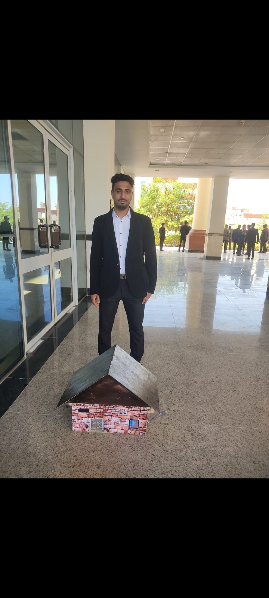

مرحباً بك، أنا المهندس مينا البدري، مطور برمجيات ومؤسس شركة Albadry المتخصصة في تطوير تطبيقات الويب والموبايل باستخدام (Flutter & Dart)، هندسة النظم الذكية وإنترنت الأشياء (IoT)، إلى جانب تصميم الهويات البصرية والشعارات الاحترافية (Logos).
نظام ذكي لإدارة سجلات المرضى وتتبع الأدوية مع دعم Firebase والمزامنة السحابية.
أنظمة تحكم منزلي ذكي متكاملة تعتمد على الأردوينو والحساسات والبرمجة المتقدمة.
حلول برمجية وأنظمة مخصصة لإدارة الأنشطة والبيانات بكفاءة عالية.
تصميم الهويات البصرية الاحترافية والشعارات التجارية للشركات والأعمال التقنية.